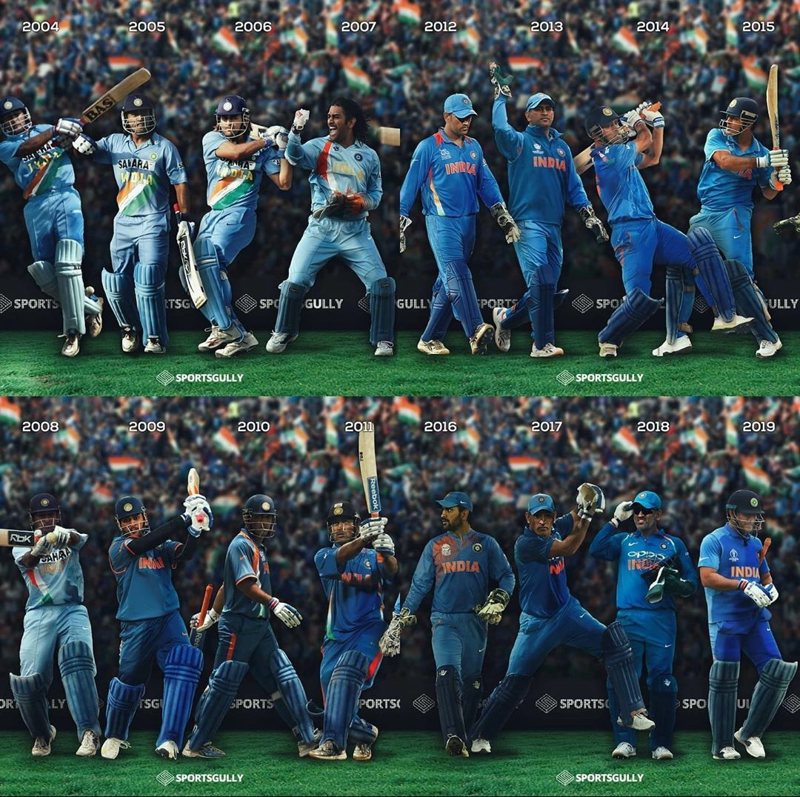

Awards Won By Mahendra Singh Dhoni
Awards and achievements
National honours
- 2018: Padma Bhushan, India's third-highest civilian award.
- 2009: Padma Shri, India's fourth-highest civilian award.
- 2007–08: Rajiv Gandhi Khel Ratna, India's highest honor given for achievement in sports.
Sporting honours
- ICC ODI Player of the Year: 2008, 2009
- ICC World ODI XI: 2006, 2008, 2009, 2010, 2011, 2012, 2013, 2014 (captain in 2009, 2011–2014)
- ICC World Test XI: 2009, 2010, 2013
- Castrol Indian Cricketer of the Year: 2011
- ICC Men's ODI team of the decade: 2011 - 2020 (captain and wicketkeeper
- ICC Men's T20I team of the decade: 2011 -2020 (captain and wicketkeeper)
- ICC Spirit of the cricket award of the decade: 2011 - 2020
- ICC Spirit of the cricket award of the decade: 2011 - 2020
Other honours and awards
- MTV Youth Icon of the Year: 2006
- LG People's Choice Award: 2013
- Honorary doctorate degree by De Montfort University in August 2011
- CNN-News18 Indian of the Year: 2011